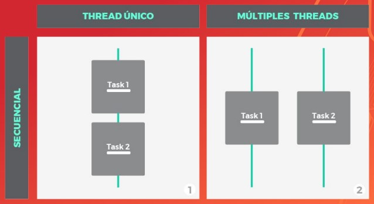
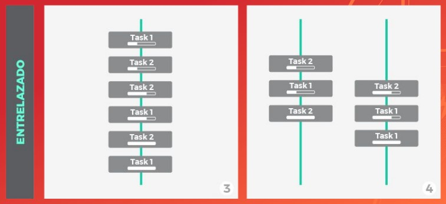
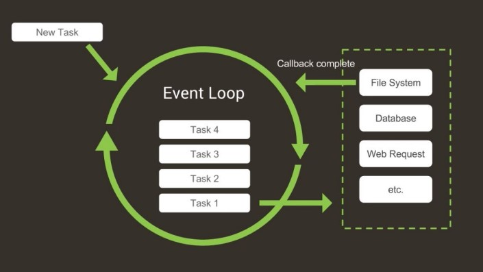
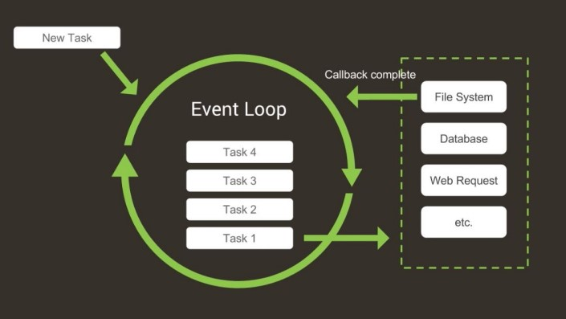
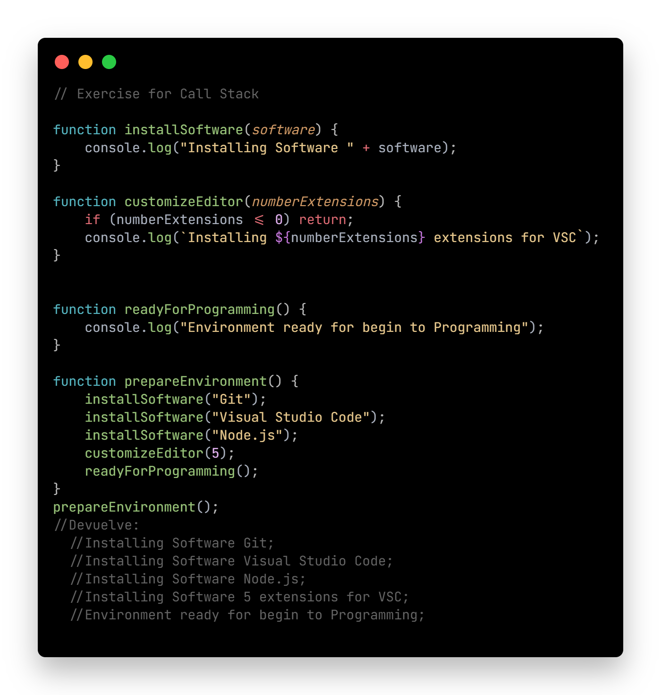

Asincronismo JS
Clase 11 - 03/08 - Link clase 11 - YouTube
Antes de empezar: setTimeOut
-
El método setTimeOut( ) es un temporizador. Este método permite ejecutar un callback luego de que haya transcurrido un determinado tiempo. Los dos parámetros más importantes a tener en cuenta son: la function a ejecutar y el time (en ms) que debe esperar para ejecutarse.
* Ver código funcional en archivo ./js/asinchronism.js


Asincronismo
-
Aprender a trabajar con asincronismo en JavaScript nos permitirá ejecutar tareas tengan un tiempo diferido respecto al tiempo de ejecución hasta que se consideren finalizadas.
- JavaScript => Lenguaje Monohilo (Single-thread).
- Significa que solo puede hacer una tarea a la vez (secuencial).
- Aunque no sea multitarea (mejor llamado multi-thread), puede delegar la ejecución a otros procesos..
Modelo de concurrencia
(Dos o más tareas progresan simultáneamente)
VS Modelo de Paralelismo
(Dos o más tareas ocurren simultáneamente)
  - JavaScript es un lenguaje concurrente, asíncrono, no bloqueante, interpretado, de alto nivel, monohilo.
Event Loop y Call Stack
-
¿Cómo maneja el asincronismo, la concurrencia y el no-bloqueo si es single-thread?
Mecanismo Event Loop
JavaScript posee una pila de ejecución llamada Call Stack donde coloca las llamadas a funciones según el orden en que deban ejecutarse.
Cada línea de ejecución se lee de forma secuencial pero, cuando una función llama a otra,entonces esa tarea se agrega a la pila hasta que termina de ejecutarla y luego la elimina de la pila
Event Loop
 

Callback
-
Un callback es una función que recibe como parámetro a otra función.
Cuando una función llama a otra función y esta última se resuelve, será agregada al Callback Queue. Esto indica que JS sigue ejecutando todas las demás tareas sincrónicas y, cuando se quede sin funciones a ejecutar en la pila de ejecución, allí agregará la información obtenida desde la cola de tareas
* Ver código funcional en archivo ./js/asinchronism.js
